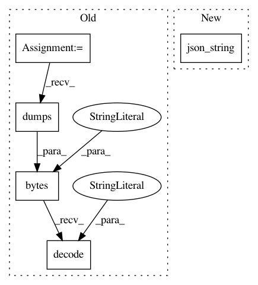

914ae53593ff330e2bcaa19690f126c8287600c9,snips_nlu/nlu_engine/nlu_engine.py,SnipsNLUEngine,persist,#SnipsNLUEngine#Any#,151
Before Change
"model_version": __model_version__,
"training_package_version": __version__
}
model_json = bytes(json.dumps(model), encoding="utf8")
model_path = directory_path / "nlu_engine.json"
with model_path.open(mode="w") as f:
f.write(model_json.decode("utf8"))
if self.fitted:
required_resources = self.config.get_required_resources()
After Change
"model_version": __model_version__,
"training_package_version": __version__
}
model_json = json_string(model)
model_path = directory_path / "nlu_engine.json"
with model_path.open(mode="w") as f:
f.write(model_json)
In pattern: SUPERPATTERN
Frequency: 4
Non-data size: 5
Instances
Project Name: snipsco/snips-nlu
Commit Name: 914ae53593ff330e2bcaa19690f126c8287600c9
Time: 2018-07-16
Author: adrien.ball@snips.ai
File Name: snips_nlu/nlu_engine/nlu_engine.py
Class Name: SnipsNLUEngine
Method Name: persist
Project Name: snipsco/snips-nlu
Commit Name: 914ae53593ff330e2bcaa19690f126c8287600c9
Time: 2018-07-16
Author: adrien.ball@snips.ai
File Name: snips_nlu/intent_parser/probabilistic_intent_parser.py
Class Name: ProbabilisticIntentParser
Method Name: persist
Project Name: snipsco/snips-nlu
Commit Name: 914ae53593ff330e2bcaa19690f126c8287600c9
Time: 2018-07-16
Author: adrien.ball@snips.ai
File Name: snips_nlu/pipeline/processing_unit.py
Class Name: ProcessingUnit
Method Name: persist_metadata
Project Name: snipsco/snips-nlu
Commit Name: 914ae53593ff330e2bcaa19690f126c8287600c9
Time: 2018-07-16
Author: adrien.ball@snips.ai
File Name: snips_nlu/tests/utils.py
Class Name: SnipsTest
Method Name: writeJsonContent